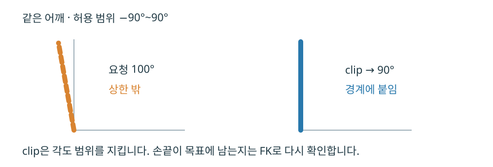
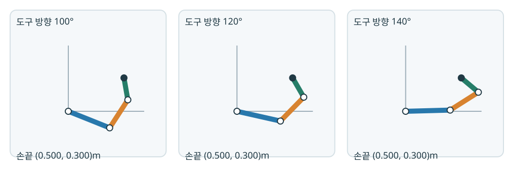
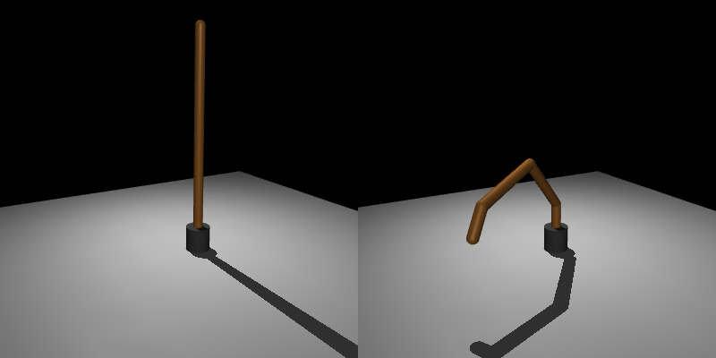

계산이 내놓은 관절각을 그대로 로봇에 넣었다고 합시다. 손끝은 목표에 정확히 닿았습니다. 그런데 팔꿈치가 반대로 꺾여 있고, 어깨는 한 바퀴 반을 감고 있습니다. 숫자는 맞는데 로봇이 그 자세로 갈 수 없습니다. 이번 시간에는 “맞는 답”과 “가능한 답”이 다르다는 문제, 그리고 관절이 남을 때 그 남는 몫을 어떻게 쓰는지를 다룹니다.
코드 블록을 내 컴퓨터에서 돌리는 방법은 예제 실행하기에 있습니다.
각도를 예쁘게 표시하는 것과 한계를 지키는 것은 다릅니다

지금까지의 수치 역기구학은 관절이 어디까지 돌 수 있는지 전혀 몰랐습니다. 계산 입장에서는 −357.5°도 428°도 그냥 숫자입니다. 실제 관절은 케이블과 몸체 때문에 정해진 범위에서만 돕니다. 사람 팔꿈치가 한쪽으로만 굽는 것과 같습니다.
이 예제의 범위는 어깨 −90~90°, 팔꿈치 0~150°입니다. 2차시의 작업 공간 예제에서 쓴 어깨 0~180°, 팔꿈치 ±150°와 다른 조건입니다. 같은 로봇처럼 보여도 페이지마다 설정이 다르므로, 숫자를 비교하기 전에 범위를 먼저 확인해야 합니다.
가장 간단한 처리는 매 걸음마다 범위를 넘은 관절을 경계에 붙여 두는 것입니다.
q = q + dq
q = np.clip(q, lower_limits, upper_limits)clip은 값이 아래보다 작으면 하한에, 위보다 크면 상한에 딱 붙입니다. 어깨가 100°로 계산되면 90°로, 팔꿈치가 −10°로 계산되면 0°로 바뀝니다. 관절마다 따로 적용되고, 범위 안의 값은 건드리지 않습니다.
결과를 나란히 보면 차이가 분명합니다. 목표는 (0.5, 0.3)m, 시작은 특이점에 가까운 (90°, 10°)입니다.
| 한계 처리 | 도착한 관절값 | 남은 거리 | 범위 안? |
|---|---|---|---|
| 없음 | 어깨 −357.5°, 팔꿈치 428.0° | 2.0×10−16m | 아니오 |
| 매 걸음 clip | 어깨 2.5°, 팔꿈치 68.0° | 0m | 예 |
여기서 흔한 오해를 정리합니다. −357.5°에 360°를 더하면 2.5°, 428°에서 360°를 빼면 68.0°입니다. 두 답은 손끝이 같은 자세입니다. 다른 것은 관절이 그 자세까지 어떻게 도착했는가입니다. 한계를 무시한 쪽은 첫 걸음이 크게 튀면서 관절이 한 바퀴 넘게 감겼고, clip을 쓴 쪽은 범위를 벗어나려는 걸음이 경계에서 멈추면서 허용된 쪽으로 수렴했습니다.
그래서 “각도를 ±180°로 표시만 바꾸면 된다”는 해결이 되지 않습니다. 그것은 표시 범위를 정리하는 일이고, 필요한 것은 허용 범위를 지키는 일입니다. 표시를 고쳐도 모터가 금지 구간을 통과해 간 사실은 사라지지 않습니다.
손끝을 그대로 두고 팔꿈치만 움직일 수 있습니다

이번에는 반대 상황입니다. 컵을 든 채로 팔꿈치를 위아래로 들어 보세요. 손끝은 컵에 붙어 있는데 팔의 모양은 달라집니다. 관절이 맞춰야 할 조건보다 많기 때문에 생기는 여유이고, 이것을 여유 자유도(redundancy)라고 부릅니다.
교안의 예제는 평면 팔입니다. 링크 길이 0.4, 0.3, 0.2m에 관절이 셋인데, 맞추려는 것은 손끝의 x, y 두 값뿐입니다. 손끝 방향까지 요구하는 문제와는 다릅니다. 조건이 둘, 관절이 셋이므로 일반적인 자세에서는 자유도가 하나 남습니다. 야코비안은 2×3입니다.
같은 목표 (0.5, 0.3)m에 세 출발점에서 수치 IK를 돌리면 세 가지 답이 나옵니다. 셋 다 손끝은 (0.5, 0.3)에 정확히 도착합니다.
| 시작 (관절 3개) | 도착한 관절값 | 손끝 |
|---|---|---|
| (0°, 30°, 30°) | (−16.7°, 66.8°, 62.2°) | (0.5, 0.3) |
| (90°, −60°, −60°) | (78.8°, −67.1°, −61.7°) | (0.5, 0.3) |
| (−30°, 90°, 60°) | (−20.5°, 75.5°, 48.6°) | (0.5, 0.3) |
이3R예에서는 같은손끝을유지하면서 이어지는 관절 자세가 있습니다. 그래서 손끝을움직이지않는 순간 관절속도 조합을 찾을 수 있습니다. 그 방향들을 모아 영공간(null space)이라고 부릅니다. 야코비안에 곱했을 때 0이 되는 관절 속도, 즉 Jq̇ = 0인 방향입니다.
Δq = N · (원하는 작은 관절 변화)
N을 아무 관절 변화에나 곱하면 손끝을 움직이는 성분은 지워지고, 손끝에 영향이 없는 성분만 남습니다. 예제에서는 “세 번째 관절(손목 역할)을 0.002rad 돌리고 싶다”를 (0, 0, 0.002)로 적어 N에 통과시킵니다. 나머지 두 관절도 함께 조정되어 손끝에 미치는 효과를 상쇄합니다.
J = jacobian(q) # 매 걸음 현재 자세에서 다시 계산
N = np.eye(3) - np.linalg.pinv(J) @ J
q = q + N @ np.array([0.0, 0.0, 0.002])
q += np.linalg.pinv(jacobian(q)) @ (target - fk(q))현재 J 계산 → 영공간 걸음 → 위치 오차 보정의 순서가 핵심입니다. 영공간 걸음은 현재 자세의 J를 기준으로 손끝을 유지합니다. 그런데 걸음이 유한하기 때문에 팔이 조금 움직이고, J가 바뀌면서 아주 작은 위치 오차가 생깁니다. 그래서 마지막 줄에서 목표와의 위치 오차를 매번 다시 보정합니다. 아래 결과는 이 보정까지 포함한 것입니다. 영공간 걸음만 반복한 결과가 아닙니다.
| 걸음 | 관절값 | 손끝 |
|---|---|---|
| 0 | (−20.5, 75.5, 48.6)° | (0.5, 0.3) |
| 100 | (−18.4, 70.6, 56.4)° | (0.5, 0.3) |
| 200 | (−16.2, 65.6, 64.0)° | (0.5, 0.3) |
| 300 | (−13.8, 60.6, 71.2)° | (0.5, 0.3) |
세 번째 관절이 48.6°에서 71.2°로 22.6° 돌았는데 손끝은 그대로입니다. 그동안 어깨와 두 번째 관절이 함께 움직여 손목이 돈 만큼을 메웠습니다. 이것이 여유 자유도의 쓰임새입니다. 손끝으로 일을 하면서 남는 몫으로 장애물을 피하거나, 관절을 한계에서 멀리 두거나, 특이점을 비켜 갈 수 있습니다. 7자유도 협동 로봇이 많이 쓰이는 이유가 여기 있습니다.
다른 계산기로 같은 로봇을 계산해 보기

숫자·공식·코드로 이어 보기
여기까지 온 계산이 맞는지 확인하는 가장 확실한 방법은, 같은 로봇을 다른 도구로 만들어 같은 숫자가 나오는지 보는 것입니다. 이번에는 6관절 팔 전체를 MuJoCo에 옮깁니다.
옮기는 작업은 생각보다 단순합니다. 3차시에서 손으로 곱한 “고정 위치 × 축 회전”이 MuJoCo의 구조와 그대로 대응되기 때문입니다.
| 직접 만든 코드 | MuJoCo 표현 |
|---|---|
고정 위치 pos | <body pos="..."> |
회전축 axis | <joint type="hinge" axis="..."> |
| 손끝 점 | <site name="tip"> |
| 순기구학 위치·방향 | mj_forward 후 site.xpos, site.xmat |
| 야코비안 | mj_jacSite의 jacp, jacr |
무작위 관절각 100개를 넣고 세 가지를 비교합니다. 손끝 위치, 손끝 자세, 야코비안입니다. 교안의 검산 결과는 각각 최대 차이 3.3×10−16m, 5.6×10−16, 7.8×10−16였고, 이 컴퓨터에서 같은 파일(b23_mujoco_check.py, 난수 씨앗 0)을 돌리니 2.2×10−16m, 5.6×10−16, 8.9×10−16이 나왔습니다.
컴퓨터 실수의 반올림 수준이므로, 두 계산이 같은 구조를 같은 기준으로 계산하고 있다는 뜻입니다. 이 팔은 회전 관절만 있어서 nq와 nv가 둘 다 6이고, 굽힌 자세의 손끝은 (0.478, 0.276, 0.248)m로 3차시의 손 계산과 같습니다.
이 검산이 말해 주는 것과 말해 주지 않는 것을 구분해야 합니다. 확인된 것은 코드끼리 일치한다는 사실입니다. 실제 로봇의 오차가 10−16m라는 뜻은 아닙니다. 링크 길이의 제작 오차, 관절 유격, 센서 오차는 이 기하학 모델에 들어 있지 않습니다.
이 페이지의 MuJoCo 수치는 b23_mujoco_check.py를 이 컴퓨터에서 돌린 값입니다. 교안과 끝자리가 다르면 아래 ‘내 컴퓨터에서 돌려 보기’를 보세요.
내 컴퓨터에서 돌려 보기
아래 출력은 이 컴퓨터(MuJoCo 3.17.0)에서 오너의 예제를 직접 돌려 얻은 값입니다. 명령은 줄 두 개(폴더로 이동 + 실행)이고 예제 실행하기에 이유가 있습니다. 그림 파일을 저장하는 예제는 예제 폴더에 PNG가 생기지 않도록 임시 폴더(cd $env:TEMP)에서 전체 경로로 돌립니다.
b21_limits.py · 한계를 지킬 때와 무시할 때
cd C:\code\src\robo\vol3\03-kinematics
..\..\.venv\Scripts\python.exe b21_limits.py한계 지키기 False: 어깨 -357.5도, 팔꿈치 428.0도, 남은 거리 2.0e-16m, 한계 안? False
한계 지키기 True : 어깨 2.5도, 팔꿈치 68.0도, 남은 거리 0.0e+00m, 한계 안? True읽을 곳: 10~15행의 함수에서 15행 np.clip(q, 하한, 상한) 한 줄이 한계를 지키는 부분이고, 19~23행이 두 경우를 비교합니다.
b22_redundant.py · 여유 자유도: 같은 목표, 다른 답
cd C:\code\src\robo\vol3\03-kinematics
..\..\.venv\Scripts\python.exe b22_redundant.py같은 목표, 다른 시작 → 다른 답
시작 (0, 30, 30) → 관절 [-16.7 66.8 62.2]도, 손끝 [0.5 0.3]
시작 (90, -60, -60) → 관절 [ 78.8 -67.1 -61.7]도, 손끝 [0.5 0.3]
시작 (-30, 90, 60) → 관절 [-20.5 75.5 48.6]도, 손끝 [0.5 0.3]
손끝을 붙잡은 채 관절만 움직이기
0걸음: 관절 [-20.5 75.5 48.6]도, 손끝 [0.5 0.3]
100걸음: 관절 [-18.4 70.6 56.4]도, 손끝 [0.5 0.3]
200걸음: 관절 [-16.2 65.6 64. ]도, 손끝 [0.5 0.3]
300걸음: 관절 [-13.8 60.6 71.2]도, 손끝 [0.5 0.3]읽을 곳: 21~26행이 세 출발점의 세 답, 29~36행이 영공간(34행 N = I − pinv(J)·J)으로 손끝을 붙잡은 채 관절만 움직이는 300걸음입니다.
b23_mujoco_check.py · 내 순기구학을 MuJoCo가 검산
cd C:\code\src\robo\vol3\03-kinematics
..\..\.venv\Scripts\python.exe b23_mujoco_check.py관절 수(nq): 6 / 속도 수(nv): 6
손끝 위치 최대 차이 : 2.2e-16 m
손끝 자세 최대 차이 : 5.6e-16
야코비안 최대 차이 : 8.9e-16읽을 곳: 12~14행이 난수 관절각 100개(씨앗 0), 26~28행이 위치·자세·야코비안의 최대 차이를 출력합니다.
b24_mujoco_render.py · MuJoCo로 6관절 팔 그리기
cd $env:TEMP
C:\code\src\robo\.venv\Scripts\python.exe C:\code\src\robo\vol3\03-kinematics\b24_mujoco_render.py[0, 0, 0, 0, 0, 0] → 손끝(site) 위치 [0. 0. 0.9]
[30, 45, 60, 0, 45, 0] → 손끝(site) 위치 [0.478 0.276 0.248]
저장: arm6_mujoco.png읽을 곳: 20행이 site(손끝) 위치를 출력합니다. 두 번째 줄이 b07의 (0.478, 0.276, 0.248)과 같습니다. 그림은 arm6_mujoco.png로 저장됩니다.
선택 · 배운 뒤 스스로 확인
clip 뒤에 남는 질문, 그리고 남는 자유도
여기까지 읽은 뒤에 확인해 보세요. 첫 문제는 관절값을 범위 안으로 잘라 넣은 다음 무엇을 더 확인해야 하는지를 묻고, 둘째 문제는 조건을 하나 더 추가했을 때 남는 여유가 어떻게 되는지를 묻습니다.
연습 두 문제 펼치기
“배열이 범위 안”과 “손끝이 목표에 있음”은 서로 다른 검사입니다. 두 문장을 따로 적어 보세요.
수업 근거 / 원문 보기
교안 p.34 · b21_limits.py
교안 p.35 · b22_redundant.py
교안 p.36 · b23_mujoco_check.py, arm6_mujoco.png
강의 교안 PDF p.34~36(관절 한계와 clip, 여유 자유도와 영공간, MuJoCo 검산)을 교과서 3.8~3.9절과 하나의 설명으로 합쳤습니다. 교과서의 “컵을 쥔 채 팔꿈치 들기” 장면과 장애물 회피·7자유도 로봇 연결은 본문에 흡수했고, 자료를 나란히 비교하는 문단은 두지 않았습니다.
- 교과서 캐시: PDF 파일 133쪽 · PDF 파일 136쪽 · 3장 원고 전체
- 수치 구분: −357.5°/428.0°와 2.5°/68.0°, 세 출발점의 도착값, 영공간 300걸음 표, MuJoCo 차이는 오너의
b21_limits.py,b22_redundant.py,b23_mujoco_check.py,b24_mujoco_render.py를 이 컴퓨터에서 돌려 확인했습니다. MuJoCo 차이만 교안(3.3·5.6·7.8×10−16)과 끝자리가 다르고(이 컴퓨터 2.2·5.6·8.9×10−16), 둘 다 반올림 수준입니다. - 도해:
assets/day2-arm6_mujoco.png— 원고 3.9절의 MuJoCo 렌더링입니다. - Modern Robotics 5.3: Singularities — 작업별 J의 랭크와 여유 자유도.
- Modern Robotics 5.4: Manipulability — 관절 속도 원, 속도 타원의 주축·반축.
- Buss, Introduction to Inverse Kinematics, p.9–11 — SVD 의사역행렬과 감쇠 최소제곱.